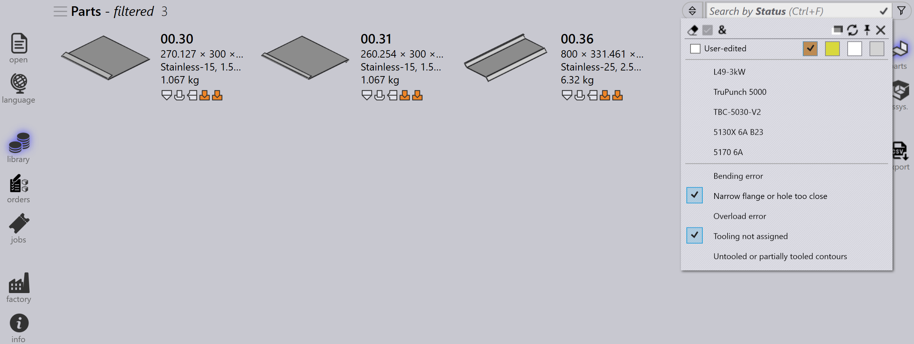

Filtres de pièces
Les filtres de la bibliothèque de pièces vous permettent de rechercher et de localiser rapidement des pièces dans la bibliothèque en appliquant des conditions spécifiques. En limitant les résultats aux seules pièces qui répondent à vos critères, ces filtres facilitent la gestion et l’accès efficace aux pièces pertinentes.

Etat
-
Utilisez le filtre Etat pour rechercher des pièces en fonction du statut d’outillage.
-
Le menu déroulant affiche les états d’outillage sous forme de cases colorées et toutes les machines disponibles ainsi que leurs erreurs applicables.
-
Les cases colorées représentent les états suivants :
-
Blanc : Outillage OK
-
Orange : L’outillage a une erreur
-
Jaune : L’outillage a un avertissement
-
Gris : Outillage supprimé
-
-
Si une pièce a des erreurs de bride étroite ou d’outillage non attribué, sélectionner ces erreurs affichera les pièces respectives.

-
Les pièces avec outillage supprimé sur la machine sélectionnée seront affichées en cliquant sur la case de couleur grise.

Supports de pliage
-
Utilisez le filtre Supports de pliage pour rechercher des pièces en fonction de l’outil de pliage utilisé.
-
Le menu déroulant affiche tous les outils de pliage disponibles et peut être filtré par nom d’outil, type (punch, gooseneck, radius, etc.) ou description.
-
Sélectionnez plusieurs outils et cliquez sur Faire tout correspondre|&** pour trier les outils qui utilisent à la fois les outils sélectionnés.

Outils utilisés
-
Le filtrage par Outils utilisés fonctionne de manière similaire au filtrage par Supports de pliage.
-
Les icônes d’outils sont affichées en tailles proportionnelles (pas exactes, mais relatives).
-
Lorsque l’aperçu de l’outillage est ouvert, survoler un outil dans la liste de filtres met en surbrillance cet outil dans le volet d’aperçu.
-
Plusieurs outils peuvent être sélectionnés et appliqués en utilisant Faire tout correspondre|&**.

Etat
-
Utilisez le filtre Etat pour rechercher des pièces en fonction de leur état actuel.
-
Le menu déroulant affiche tous les états applicables en fonction des pièces de la bibliothèque disponibles.
-
La liste des états change dynamiquement en fonction des pièces sélectionnées et de leur statut.
-
Par exemple, sélectionnez Material Missing pour afficher les pièces dans un état de matériau non résolu.